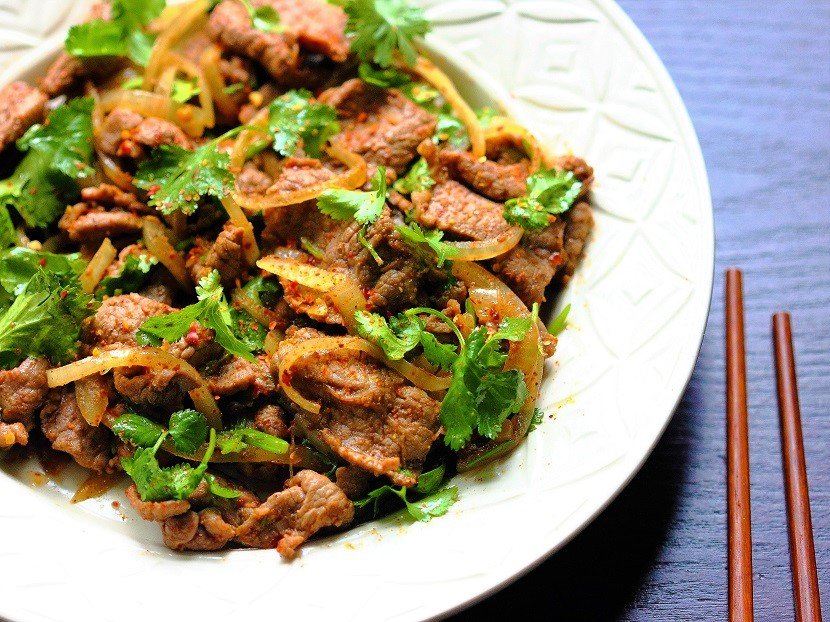

Stir Fried Lamb
Served over white rice
Ingredients
- Some lamb fillet cut into thin pieces.
- 2 cloves of garlic, grated
- Ginger the size of one clove of garlic, grated
- Some veggies: Carrot, yellow pepper and sugar snaps
- Olive oil
- Sugar snaps
- 1 piece yellow pepper
- 2 pieces of carrot
- 3 tbsp. soy sauce
- 2 tsp. tamarind paste
- Salt to taste
- Dhania
Instructions
- Prepare the veggies
- Add a bit of olive oil in a pan, the meat, the ginger, and the garlic. Stir on medium heat. Do not allow the garlic and ginger to burn
- Add 3 tbsp. of soy sauce and 2 tsp. of tamarind paste.
- Keep stirring frequently. Add just a little bit of water if you think it is drying out too much. Add salt to taste
- Once the lamb is cooked, add the carrots. Wait for 5 minutes then add the sugar snaps and the yellow pepper.
- Then taste for salt, add if it needs any and chop up a little bit of dhania to fold in. Fold the dhania into the stir fry and you are done
- Serve immediately over steamed rice
Return to top
Return to main page